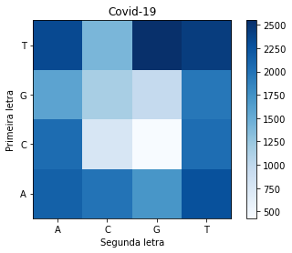
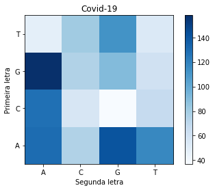

import numpy as np
from matplotlib import pyplot as plt
from pprint import pprintcovid = open('sequence_covid.txt').read()influenza = open('sequence_influenza.txt').read()ref_covid = {
'AA': covid.count('AA'),
'AT': covid.count('AT'),
'AC': covid.count('AC'),
'AG': covid.count('AG'),
'TT': covid.count('TT'),
'TC': covid.count('TC'),
'TG': covid.count('TG'),
'TA': covid.count('TA'),
'CC': covid.count('CC'),
'CA': covid.count('CA'),
'CG': covid.count('CG'),
'CT': covid.count('CT'),
'GG': covid.count('GG'),
'GA': covid.count('GA'),
'GC': covid.count('GC'),
'GT': covid.count('GT'),
}
pprint(ref_covid){'AA': 2144,
'AC': 1999,
'AG': 1711,
'AT': 2276,
'CA': 2053,
'CC': 770,
'CG': 427,
'CT': 2049,
'GA': 1586,
'GC': 1153,
'GG': 958,
'GT': 1962,
'TA': 2338,
'TC': 1407,
'TG': 2549,
'TT': 2439}val_covid = [ref_covid['AA'], ref_covid['AC'], ref_covid['AG'], ref_covid['AT'], ref_covid['CA'], ref_covid['CC'], ref_covid['CG'], ref_covid['CT'], ref_covid['GA'], ref_covid['GC'], ref_covid['GG'], ref_covid['GT'], ref_covid['TA'], ref_covid['TC'], ref_covid['TG'], ref_covid['TT']]matriz_covid = np.array(val_covid).reshape(4, 4)
pprint(matriz_covid)array([[2144, 1999, 1711, 2276],
[2053, 770, 427, 2049],
[1586, 1153, 958, 1962],
[2338, 1407, 2549, 2439]])plt.imshow(matriz_covid, cmap = 'Blues', origin="lower")
plt.xlabel('Segunda letra'); plt.ylabel('Primeira letra')
plt.xticks((0,1,2,3),['A','C','G','T'])
plt.yticks([3, 2, 1, 0],['T','G','C','A'])
plt.title("Covid-19")
_ = plt.colorbar()
ref_inf = {
'AA': influenza.count('AA'),
'AT': influenza.count('AT'),
'AC': influenza.count('AC'),
'AG': influenza.count('AG'),
'TT': influenza.count('TT'),
'TC': influenza.count('TC'),
'TG': influenza.count('TG'),
'TA': influenza.count('TA'),
'CC': influenza.count('CC'),
'CA': influenza.count('CA'),
'CG': influenza.count('CG'),
'CT': influenza.count('CT'),
'GG': influenza.count('GG'),
'GA': influenza.count('GA'),
'GC': influenza.count('GC'),
'GT': influenza.count('GT'),
}
pprint(ref_inf){'AA': 130,
'AC': 75,
'AG': 141,
'AT': 117,
'CA': 128,
'CC': 56,
'CG': 37,
'CT': 67,
'GA': 158,
'GC': 75,
'GG': 90,
'GT': 61,
'TA': 48,
'TC': 81,
'TG': 112,
'TT': 54}val_inf = [ref_inf['AA'], ref_inf['AC'], ref_inf['AG'], ref_inf['AT'], ref_inf['CA'], ref_inf['CC'], ref_inf['CG'], ref_inf['CT'], ref_inf['GA'], ref_inf['GC'], ref_inf['GG'], ref_inf['GT'], ref_inf['TA'], ref_inf['TC'], ref_inf['TG'], ref_inf['TT']]matriz_inf = np.array(val_inf).reshape(4, 4)
pprint(matriz_inf)array([[130, 75, 141, 117],
[128, 56, 37, 67],
[158, 75, 90, 61],
[ 48, 81, 112, 54]])plt.imshow(matriz_inf, cmap = 'Blues', origin="lower")
plt.xlabel('Segunda letra'); plt.ylabel('Primeira letra')
plt.xticks((0,1,2,3),['A','C','G','T'])
plt.yticks([3, 2, 1, 0],['T','G','C','A'])
plt.title("Covid-19")
_ = plt.colorbar()